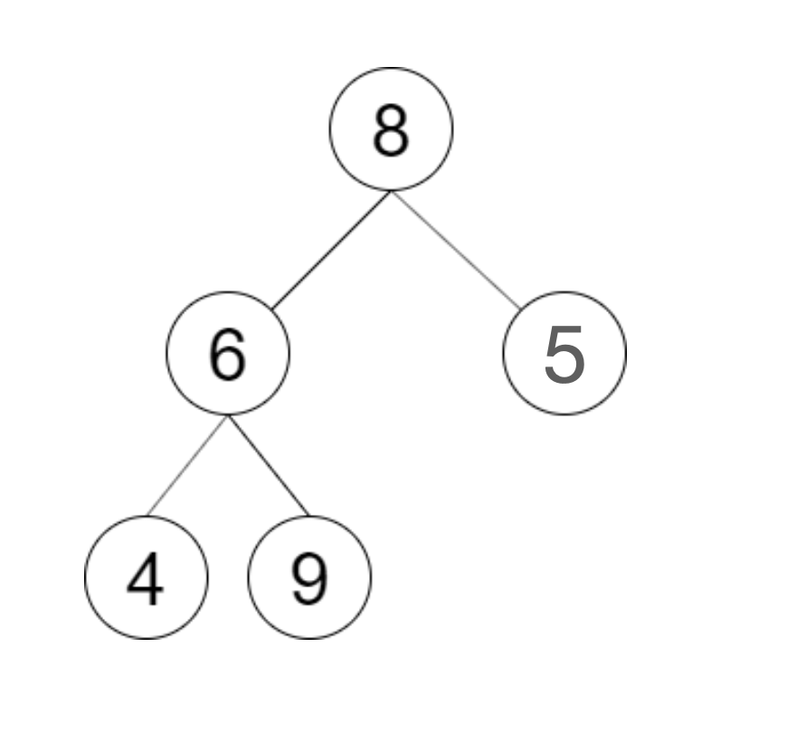
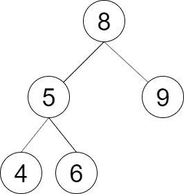

剑指 Offer 33. 验证二叉搜索树的后序遍历序列
后序末尾是根：从左扫出第一个 ≥ 根的位置当分界，右段必须全 > 根，再递归验证左右两段。
思路
- 后序「左右根」：末尾
a[j]一定是根；从左找第一个不小于根的位置mid，[i, mid-1]是左子树、[mid, j-1]应是右子树。 - 右段里若混进比根小的值，直接判假；否则递归验证左右两段（空段天然合法）。
- 题目保证无重复值；想 O(n) 可用单调栈倒着扫并维护「左子树值的上界」，但面试先写对切分递归更稳。
图解
最优解
1class Solution {2 public boolean verifyTreeOrder(int[] postorder) {3 return verify(postorder, 0, postorder.length - 1);4 }5 6 // a[i..j] 是否是某棵 BST 的后序：末尾 a[j] 是根，前面要能切成左（< 根）右（> 根）两段7 private boolean verify(int[] a, int i, int j) {8 if (i >= j) return true; // 空段或单结点，天然合法9 int root = a[j];10 int mid = i;11 while (mid < j && a[mid] < root) mid++; // 从左找第一处不小于根的：那是左右子树的分界12 for (int k = mid; k < j; k++) {13 if (a[k] < root) return false; // 右段里混进比根小的：绝不是后序14 }15 return verify(a, i, mid - 1) && verify(a, mid, j - 1);16 }17}题目
请实现一个函数来判断整数数组 postorder 是否为二叉搜索树的后序遍历结果。
示例 1：

输入: postorder = [4,9,6,5,8] 输出: false 解释：从上图可以看出这不是一颗二叉搜索树
示例 2：

输入: postorder = [4,6,5,9,8] 输出: true 解释：可构建的二叉搜索树如上图
提示：
数组长度 <= 1000postorder中无重复数字
题面取自力扣当前版本。
数据快照 2026-11-04。题面版权归力扣所有，本站点仅供本人学习使用，请勿对外发布。